Create a series of unified cards, based around a single theme.
To get an older, stylized feel for the cards, linocut was the chosen medium. This meant that it could only be in two colours, so playing around with positive and negative space was important. This also meant that one cut too big or not enough safe space given means you could completely lose details of the illustration.
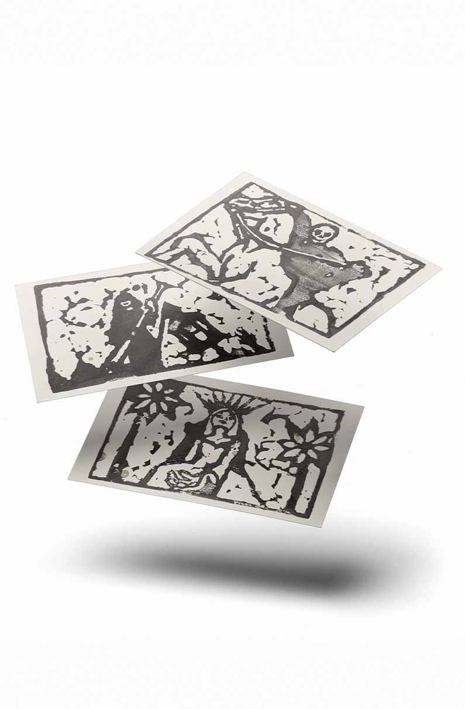
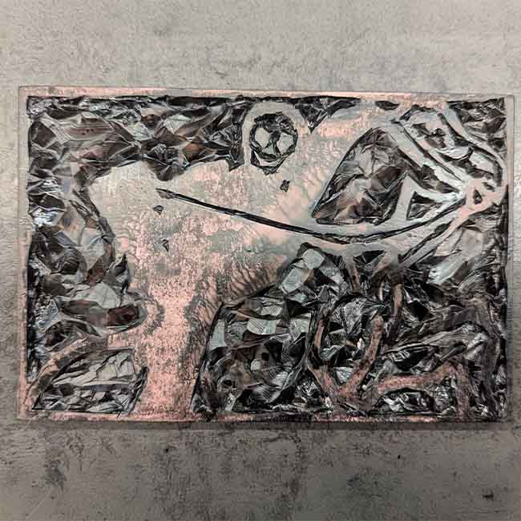
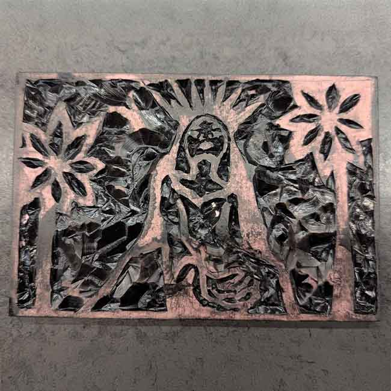
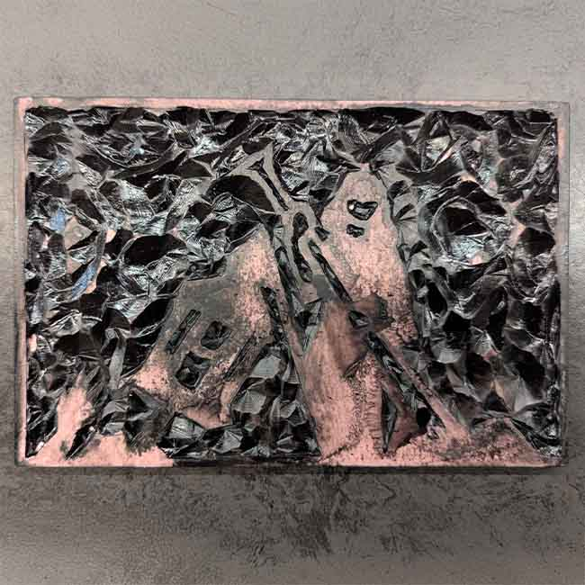
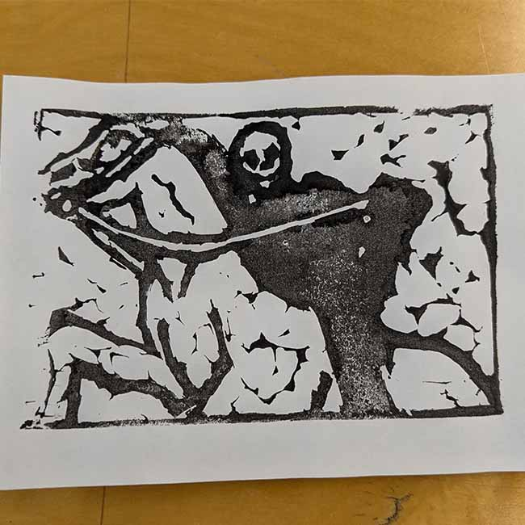
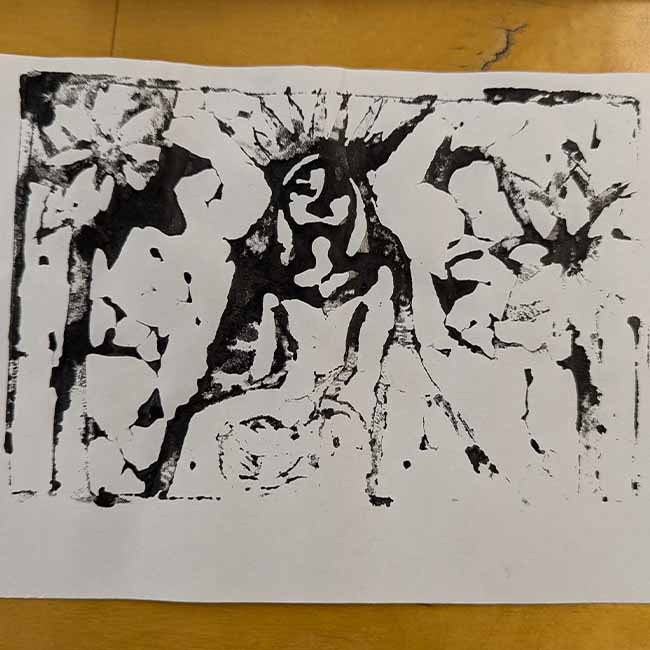
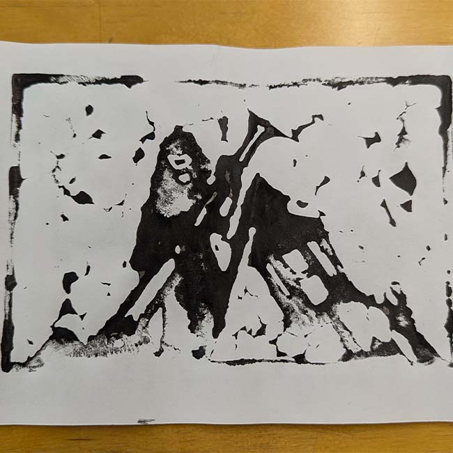
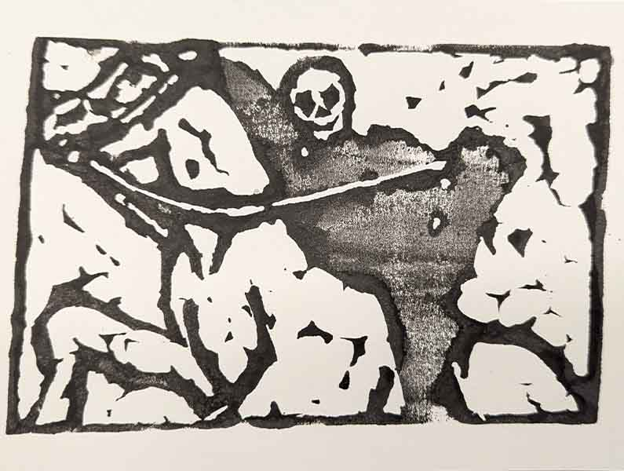
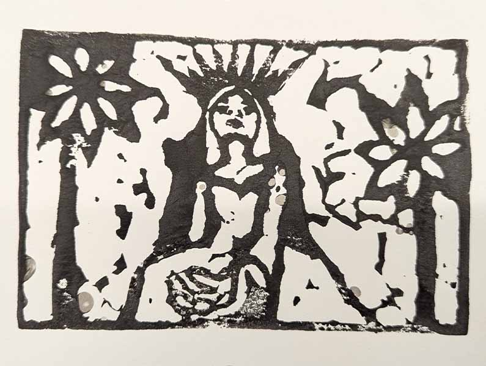
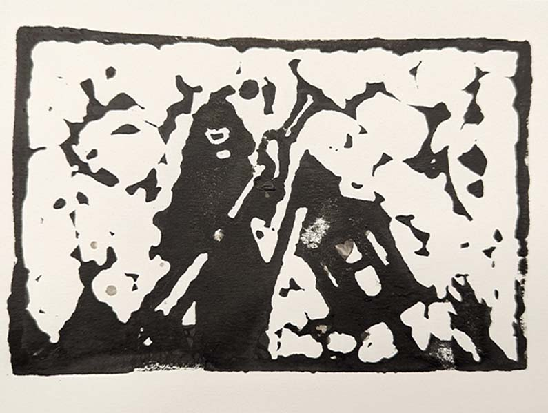
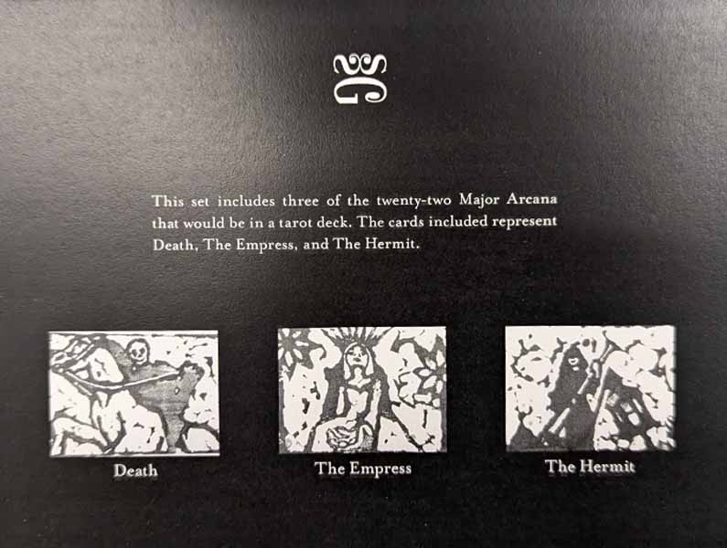